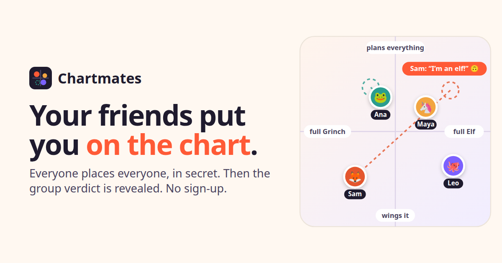

About Chartmates
Chartmates turns the alignment chart meme into a group vote. One person picks a chart (40 built in, from "Grinch or Elf?" to the classic lawful-to-chaotic grid, or your own two axes) and sends the link to the group chat. Everyone opens it, types a nickname and places everyone, in secret. When the whole group is in, the chart reveals each person at the group's average, with a ring where they put themselves.
Support
Found a bug or want a chart removed? Open an issue on GitHub. The person who created a chart can delete it from the chart page; every chart is deleted automatically after 60 days.
Chartmates. Free, no account, no ads.